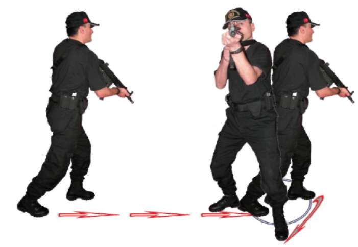
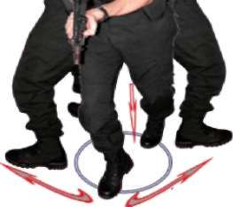
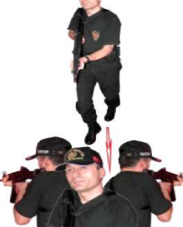

Bu tekniklerle,
^ MP5 makinalı tabancada fişeğin bitmesi durumunda şarjörün 4, 5
saniyede değiştirilmesi,
^ Silahın tutukluk yapması durumda hızlı şekilde şarjör çıkartılarak tutukluluğun giderilmesi,
^ Hedef küçülterek çökme pozisyonunda şarjör değiştirilmesi,
^ Sütrelerden faydalanarak ayakta şarjör değiştirilmesinin bilinçaltına yerleştirilerek refleks hâline getirilmesi amaçlanmaktadır 113
Şekil-12) Şarjör Değiştirme ve Çökerek Atış İstasyonu 2.4. MP5 MAKİNALI TABANCA İLE YÜRÜRKEN DURUP DEĞİŞİK
YÖNLERDEN ÇIKAN HEDEFLERE DOĞRU ATIŞ TEKNİKLERİ
2.4.1. Yürürken Önden Çıkan Hedeflere Doğru Durarak Atış Tekniği Ani bir duruşla eş zamanlı olarak, MP5 makinalı tabancanız boşsa kurarak, doluysa direk hızlı atış tekniğine geçerek hedefinize atış yapın. Silahınızın dipçiğini omuz boşluğundaki kaynağını bozmadan 70 derecelik bir açıyla yere doğru indirip yürümeye devam edin. Bundan sonra verilecek atış komutlarında dolu olan silahınızı yukarı kaldırıp atış yapın ve aynı pozisyona geçin. Her komutta aynı tekniği tekrarlayın. (Bakınız Resim-15.a) 114



BÖLÜM
İLERİ SEVİYE ATIŞ TEKNİKLERİ
Resim-15.a) Yürürken Önden Çıkan Hedeflere Doğru Durarak Atış Tekniği 2.4.2. Yürürken Sağdan Çıkan Hedeflere Doğru Durarak Atış Tekniği Ani bir duruşla eş zamanlı olarak, MP5 makinalı tabancanız boşsa kurarak, doluysa direk sağa dönüş tekniğini uygulayarak hedefinize atış yapın. Silahınızın dipçiğini omuz boşluğundaki kaynağını bozmadan 70 derecelik bir açıyla yere doğru indirip yürümeye devam edin. Bundan sonra verilecek atış komutlarında dönüş yaparak dolu olan silahınızı yukarı kaldırıp atış yapın ve aynı pozisyona geçin. Her komutta aynı tekniği tekrarlayın. (Bakınız Resim-15.b) Resim-15.b) Yürürken Sağdan Çıkan Hedeflere Doğru Durarak Atış Tekniği 115
2.4.3. Yürürken Soldan Çıkan Hedeflere Doğru Durarak Atış Tekniği Ani bir duruşla eş zamanlı olarak, MP5 makinalı tabancanız boşsa kurarak, doluysa direk sola dönüş tekniğini uygulayarak hedefinize atış yapın. Silahınızın dipçiğini omuz boşluğundaki kaynağını bozmadan 70 derecelik bir açıyla yere doğru indirip yürümeye devam edin. Bundan sonra verilecek atış komutlarında dönüş yaparak dolu olan silahınızı yukarı kaldırıp atış yapın ve aynı pozisyona geçin. Her komutta aynı tekniği tekrarlayın. (Bakınız Resim-15.c) Resim-15.c) Yürürken Soldan Çıkan Hedeflere Doğru Durarak Atış Tekniği 2.4.4. Yürürken Geriden Çıkan Hedeflere Doğru Durarak Atış Tekniği Ani bir duruşla eş zamanlı olarak, MP5 makinalı tabancanız boşsa kurarak, doluysa direk geriye dönüş tekniğini uygulayarak hedefinize atış yapın. Silahınızın dipçiğini omuz boşluğundaki kaynağını bozmadan 70 derecelik bir açıyla yere doğru indirip yürümeye devam edin. Bundan sonra verilecek atış komutlarında dönüş yaparak dolu olan silahınızı yukarı kaldırıp atış yapın ve aynı pozisyona geçin. Her komutta aynı tekniği tekrarlayın. (Bakınız Resim-15.d) 116



BÖLÜM
İLERİ SEVİYE ATIŞ TEKNİKLERİ
Sağdan
Soldan
Dönüş
Dönüş
Resim-15.d) Yürürken Geriden Çıkan Hedeflere Doğru Dura-rak Atış Tekniği Tekniği Uygulamalı Olarak Çalışma Şekli
^ Emniyet tedbirlerini okuyun. Atış poligonuyla ilgili gerekli önlemleri alın.
^ Vücudunuzu basit ısınma teknikleri ile ısındırın ve çalışmaya hazırlayın.
MP5 makinalı tabancayı ve şarjörleri kontrol edip koruyucu malzemeleri giyin ve giydirin.
^ Tekniklerin hepsini, atışlı çalışmadan önce yetirince kuru çalışın.
^ Boy hedeflerinizi poligonun büyüklüğüne göre yakından uzağa doğru, aralarında yürünecek şekilde 5-7 metre mesafelerde çapraz ve düz olacak biçimde yarleştirin.
^ Bu tekniklerin hepsini, mevcut olan istasyonda atışlı çalışırken teker teker çalışın.
^ Tek şarjörünüzü tam kapasite doldurup silahınıza takın. Silahınızı normal doldurup istasyondaki ilk hedefin karşısında atış pozisyonuna ge
çerek komut bekleyin
^ Verilen yürü komutuyla beraber hedeflere yakından uzağa doğru yürüyün. Verilen ilk atış komutuyla beraber durup silahınızı kaldırarak size yakın olan hedefe doğru ikili veya üçlü darbeli atış yapın. Silahınızın dipçiğinin omuz boşluğundaki kaynağına bozmadan silahınızı aşağıya 117
doğru indirip yürümenize devam edin. Verilen her atış komutunda atış
tekniğini tekrarlayarak son hedefe atış yapıncaya kadar devam edin.
^ Aynı tekniği boy hedeflerini yürüme yolunuza paralel 5-7 metre mesafe oluşturacak şekilde yerleştirin. Tek şarjörünüzü tam kapasite doldurup silahınıza takın yürüme yolunuzun başlangıç noktasında atış pozisyonu alarak komut bekleyin.
^ Verilen yürüme komutuyla hedefleri sağ tarafınıza alarak yürümeye başlayın. Verilen ilk atış komutunda size yakın olan ilk hedefe dönüp durarak atış yapın. Hemen sonra silahın dipçiğinin omuz boşluğundaki kaynağını bozmadan silahı aşağıya indirip yürüme istikametinize dönerek yürümenize devam edin. Verilen her atış komutunda aynı atış tekniğini son hedefe atış yapana kadar tekrarlayın.
^ Ayrıca yürüme yönünüzü değiştirip hedeflerinizi yürüme yönünüzün soluna alın. Aynı atış tekniğini sol yöndeki hedeflerinize yapın
^ Tek şarjörünüzü tam kapasite doldurup silahınıza takın ve normal dolduruş yaparak bir metre mesafeden sırtınızı boy hedefine dönüp atış
pozisyonunuzu alarak verilecek komutu bekleyin.
^ Verilen yürü komutuyla hedefe sırtınız dönük şekilde, hedeften uzaklaşarak yürürken verilen ilk atış komutunda durun. Sağdan ve soldan hedefe dönüp silahınızı kaldırarak atış yapın ve tekrar hedefe sırtınızı dönün yürümenize devam edin. 10-15 metre mesafeye kadar verilen atış komutlarıyla beraber atış tekniğini uygulayın.
^ Atışlarınızın boy hedefinin göğüs bölgesinde toplanması başarılı oldu
ğunuzu gösterir.
^ Mühimmatın durumuna göre teknikleri tekrar edin.
^ Tamamlanan her çalışmadan sonra atış yapan tüm personele şarjörleri çıkarttırın. Silahların fişek yatağını gözle ve elle kontrol ettirip güvenli bir bölgede tetik düşürttürdükten sonra MP5 makinalı tabancanın mekanizmasını tekrar kurulu pozisyona getirtin ve silahları emniyete aldırın.
(Bakınız Şekil-13.a, 13.b, 13.c, 13.d)